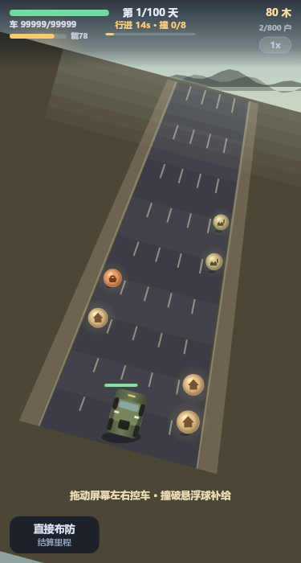
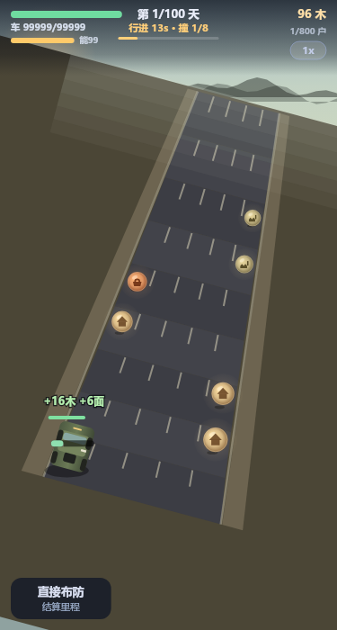
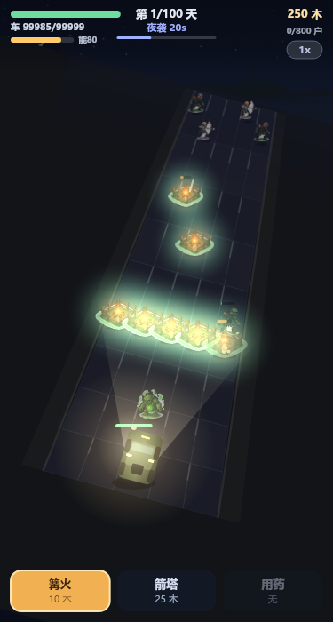

Nightfall Glow
太阳不再升起。开着越野车沿废墟公路一路向前——白天撞破悬浮球搜刮补给， 黄昏布防，夜晚守在阵前。坚守 100 天，或者开过 800 户抵达救援中心。
开始游戏 →


行进 15 秒、黄昏布防 15 秒、夜袭 30 秒。行进省下的时间直接并入布防，所以升车速等于换布防时间。
球只挂最外侧两条车道，成对分布。撞上就停 1.4 秒搜刮——车停了，倒计时照走。搜满 8 个要 11.2 秒，所以车速不升到 Lv3 就推不动每天 8 户。
5 车道 × 9 行纵深格，整体顺时针旋转 15°，公路斜着收进地平线。远端路宽收敛到近端 46%，怪物从远处俯冲下来。